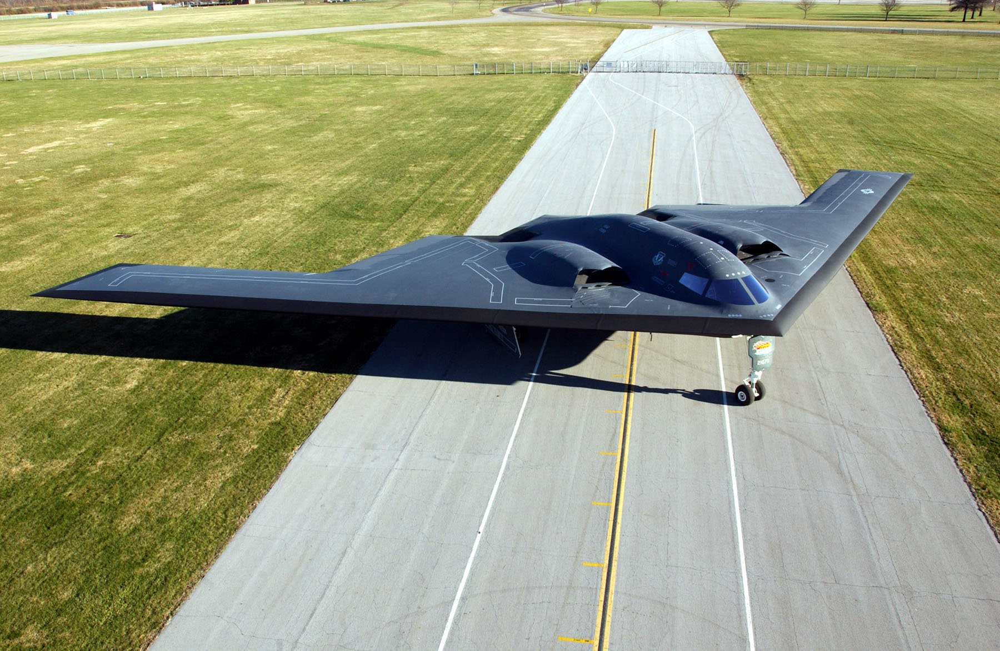
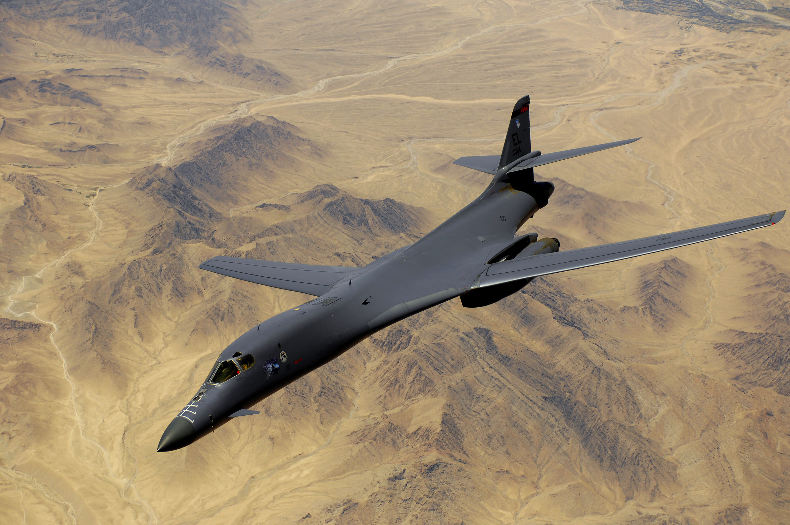
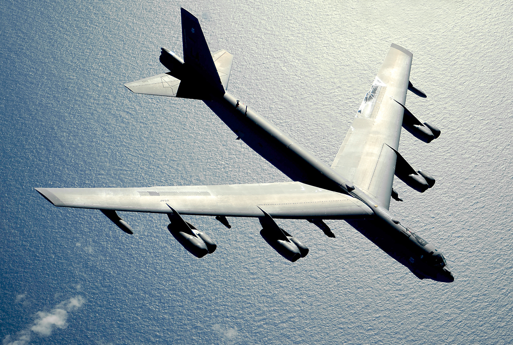

B-2 Spirit

B - 2 Spirit – amerykański bombowiec strategiczny o obniżonej wykrywalności zbudowany w układzie latającego skrzydła. Zdolny do przenoszenia bomb konwencjonalnych i jądrowych, napędzany czterema turbinowymi silnikami dwuprzepływowymi firmy General Electric.
Koncepcja budowy B-2 powstała w latach siedemdziesiątych w wyniku stałego rozwoju radzieckiej techniki radiolokacyjnej. Pierwsza prezentacja B-2 odbyła się 22 listopada 1988 roku w bazie Sił Powietrznych w Palmdale w stanie Kalifornia.
Pierwszy lot B-2 odbył się 17 lipca 1989 roku. Samolot wykonał wówczas lot z bazy Palmdale do bazy Edwards. Pierwszy egzemplarz dostarczono do 509. Skrzydła Bombowego w bazie lotniczej Whiteman w stanie Missouri 17 grudnia 1993 roku.
Samolot zbudowany jest głównie z materiałów kompozytowych, m.in. z kevlaru. Powierzchnia samolotu pokryta jest specjalnym lakierem pochłaniającym fale radarowe. B-2 ma dwie komory bombowe przystosowane do przenoszenia broni jądrowej i konwencjonalnej.
Sterowanie samolotem jest realizowane poprzez układ fly-by-wire, zaś stateczność zapewnia rozbudowany komputerowy system sterowania lotem. Załoga liczy dwóch pilotów.
Czytaj dalej
Jeśli chcesz zobaczyć video z B-2 w akcji, kliknij ten przycisk -->
Jeśli chcesz zobaczyć video z B-2 w akcji, kliknij ten przycisk -->
B-1B Lancer

B - 1B Lancer – amerykański bombowiec strategiczny dalekiego zasięgu o zmiennej geometrii skrzydeł, zbudowany przez wytwórnię Rockwell International (obecnie Boeing BDS). Wraz z samolotami B-52 Stratofortress i B-2 Spirit stanowi trzon strategicznego lotnictwa bombowego Stanów Zjednoczonych.
Oficjalna nazwa Lancer nie została powszechnie przyjęta przez latające tą maszyną załogi. Częściej jest on określany mianem Bone (kość), pochodzącym od fonetycznej nazwy B-1 jako B-one.
Projekt samolotu B-1 powstał podczas zimnej wojny około 1965 roku, w ramach programu zaawansowanego załogowego samolotu strategicznego (AMSA – Advanced Manned Strategic Aircraft). Zadaniem samolotu tego typu miała być penetracja przestrzeni powietrznej Związku Radzieckiego i przenoszenie broni jądrowej, w ramach amerykańskiej strategii odstraszania nuklearnego. Czytaj dalej
Projekt samolotu B-1 powstał podczas zimnej wojny około 1965 roku, w ramach programu zaawansowanego załogowego samolotu strategicznego (AMSA – Advanced Manned Strategic Aircraft). Zadaniem samolotu tego typu miała być penetracja przestrzeni powietrznej Związku Radzieckiego i przenoszenie broni jądrowej, w ramach amerykańskiej strategii odstraszania nuklearnego. Czytaj dalej
F-117 Nighthawk
 F - 117 Nighthawk – amerykański odrzutowy samolot bombowy wykonany w technice obniżonej wykrywalności, produkowany przez przedsiębiorstwo Lockheed.
Pomimo oznaczenia 'F', stosowanego w lotnictwie USA do klasyfikacji myśliwców, F-117 jest bombowcem taktycznym, przeznaczonym do wykonywania precyzyjnych ataków na kluczowe dla nieprzyjaciela cele naziemne w silnie bronionej przestrzeni powietrznej.
F - 117 Nighthawk – amerykański odrzutowy samolot bombowy wykonany w technice obniżonej wykrywalności, produkowany przez przedsiębiorstwo Lockheed.
Pomimo oznaczenia 'F', stosowanego w lotnictwie USA do klasyfikacji myśliwców, F-117 jest bombowcem taktycznym, przeznaczonym do wykonywania precyzyjnych ataków na kluczowe dla nieprzyjaciela cele naziemne w silnie bronionej przestrzeni powietrznej.
Formalnie służył siłach powietrznych Stanów Zjednoczonych (USAF) od 1983 do 2008 roku. Wycofane maszyny zakonserwowano i zmagazynowano. Mimo to w późniejszych latach w mediach pojawiały się nowe fotografie i filmy pokazujące F-117 w powietrzu. Jednak już w 2010 roku, pojawiły się doniesienia o przywróceniu czterech maszyn do lotów badawczych oraz dwóch kolejnych pełniących rolę zapasową. Ich loty zaobserwowano w rejonie Nellis Air Force Base w Nevadzie. Kolejne loty F-117 zostały zaobserwowano w maju 2013 roku, wrześniu 2014. W lipcu 2016 roku i w tym samym miesiącu w 2018 roku zaobserwowano loty w rejonie Tonopah. 26 lutego 2019 roku pojedynczy egzemplarz został sfotografowany w rejonie Doliny Śmierci w Kalifornii. Dzień później maszyna w towarzystwie kolejnego F-117 została ponownie dostrzeżona w tym samym miejscu. Czytaj dalej
B-52 Stratofortress

Boeing B - 52 Stratofortress – amerykański bombowiec strategiczny dalekiego zasięgu. Oblatany w 1952 roku, stosowany bojowo między innymi w wojnie wietnamskiej i pierwszej wojnie w Zatoce Perskiej.
W szczytowym okresie służby samolotu, w 1963 roku, lotnictwo strategiczne USA miało 650 B-52, zgrupowanych w 42 dywizjonach na 38 lotniskach. W latach 60. rakiety międzykontynentalne przejęły główną rolę w amerykańskich siłach jądrowych, a nieustannie ulepszana radziecka obrona przeciwlotnicza postawiła pod znakiem zapytania skuteczność B-52.
Tylko częściowym lekarstwem było wyposażenie B-52 w pociski samosterujące, które pozwalały atakować z większych odległości. Z tych powodów z biegiem czasu B-52 zaczęły odgrywać coraz większą rolę jako bombowce konwencjonalne. W 2018 r. w lotnictwie USA nadal służy 75 egzemplarzy wersji B-52H, budowanej między 1960 i 1962.
Wskaźnik dostępnych do użycia maszyn wynosi do 60% tej liczby i jest lepszy od nowszych bombowców B-1 i B-2 (do 40%), niższy jest także koszt godziny lotu. Amerykańskie siły zbrojne nie zamierzają wycofywać Stratofortressów ze służby liniowej wcześniej niż w latach 40. XXI wieku.
Czytaj dalej